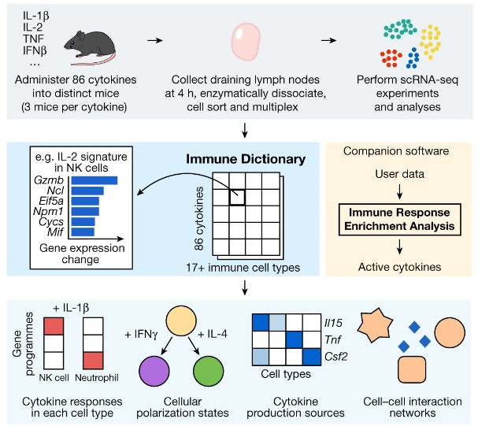
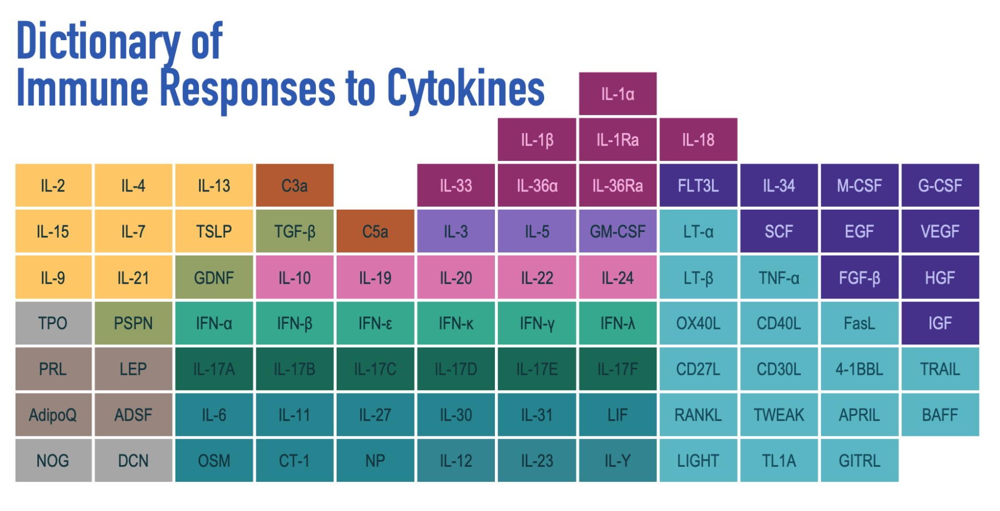

This post is part 2 in a series. Be sure to read part 1 here.
A key obstacle hindering medical research for a range of diseases is our lack of understanding of the immune system. Harvard Professor Wayne Koff described his decades of HIV research, “slowly, over time, we began to see that we understood a lot about HIV at the molecular level, but we didn’t know anything about ourselves. And the reason is that the immune system is incredibly complex.”
Many diseases involve the immune system overreacting, underreacting, or having a mistargeted reaction. Deepening our understanding of the immune system is crucial for better understanding and treating a range of diseases. In part 1 of this series, I shared about the networks by which immune cells communicate and coordinate via the use of protein messengers called cytokines. These networks are complex and not fully mapped. Studying these networks is part of determining how and why the immune system reacts as it does. Here, I will share some more research on immune cell-cytokine networks.
AI does not replace other ways of knowing about the world: benchtop research is still crucial
AI is a powerful tool, but it does not replace other ways of knowing about the world, including qualitative research (as I wrote about together with Louisa Bartolo) and benchtop quantitative experiments. Machine learning and AI techniques are great at learning patterns in existing data. However, they are limited by what types of data have been collected so far, and it is still crucial to continue running new laboratory-based experiments. For this reason, the recent Immune Dictionary paper was a valuable contribution to the field. The researchers gathered direct measurements of over >1,400 cytokine-cell type pairings in an in vivo experiment.

This study was significant because it consdiered all major immune cell types and all major cytokines (studies typically look at only 5 immune cell types) and was conducted in vivo (not in a culture). The researchers injected 86 different cytokines into individual mice and measured the responses of 17 types of immune cells in the mouse lymph nodes. They used single-cell RNA sequencing, which is more direct than considering ligand and receptor expression association data. They released their findings as an “Immune Dictionary” and developed accompanying computer software. This software was then used to identify cytokine networks in tumors after checkpoint blockade therapy (a cancer therapy that helps to reactivate exhausted immune cells).
One key finding was that the responses induced by cytokines are highly cell-specific. Rarer types of immune cells expressed a greater number of cytokine types than more common cell types. One rare cell type, typically not even covered in immunology courses, was found to express the highest number of distinct cytokines, influencing nearly every other cell type. This result suggests that rare immune cell types are crucial for cell-to-cell communication.

Another important finding was that every immune cell type could be polarized into multiple states depending on the combination of cytokines that it received. The two key researchers were surprised at this level of plasticity and complexity in immune cell types, with even the most well-studied cytokines inducing more complex responses than previously expected.
An Ongoing Area of Research
This is an exciting area of research to follow. There is still much work to be done in more thoroughly understanding the intricate and complex ways immune cells coordinate with one another to respond to threats. Immune cell-cytokine networks are a great illustration of the power of interdisciplinary work, since NLP, mathematics, and bench top immunology research all provide important insights into the problem. And this is just one of several important problems in immunology where AI is being applied!
You can subscribe to be notified of new blog posts by submitting your email below:
I look forward to reading your responses. Create a free GitHub account to comment below.